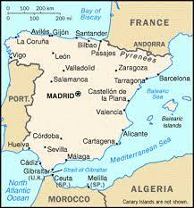
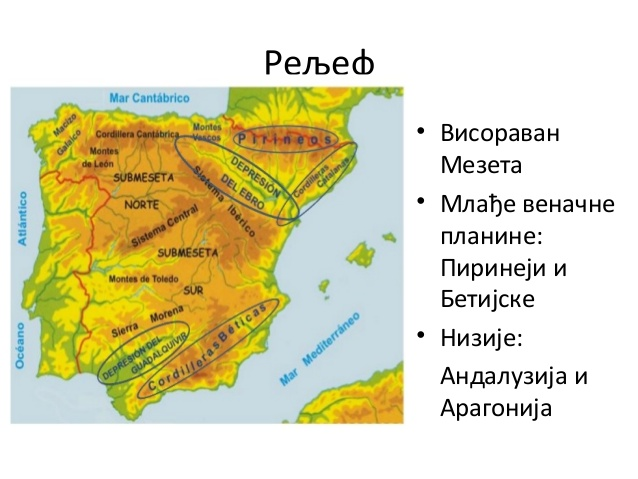
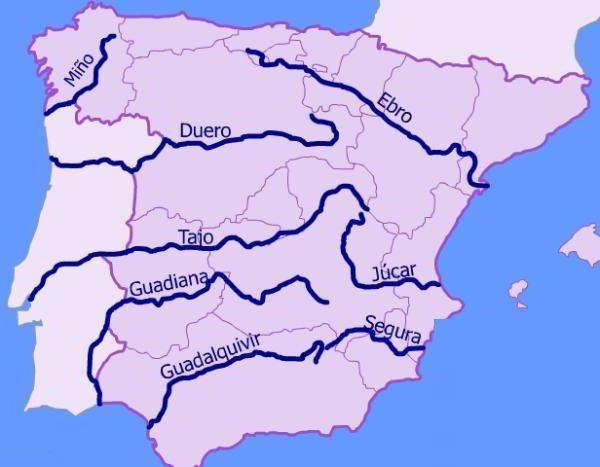

Државе и територије са којима се Шпанија граничи су: Андора, Португалија, Мароко, Гибралтар и Француска. Површина државе износи 505.990 km². Шпанија се налази у умереној зони, између 43°47'24" северне и 36°00'40" јужне географске ширине, и између 7°00'29" источне и 5°36'40" западне географске дужине.
Најстарији део Шпаније, представља 600-800 m висока висораван Мезета, која је грађена од прекамбријских и кристаластих стена и старих кречњака. На северу је окружена младим набраним Кантабријским планинама и Пиринејима (Пико де Анети, 3.404 m), а на југу Андалузијским планинама или Бетијским Кордиљерима, који су грађени од мезозојских и терцијарних наслага. Андалузијске планине састоје се од неколико масива, који се пружају паралелно с обалом Средоземног мора: централни део Сијера Неваде (Sierra Nevada) с највишим врхом Шпаније (Муласен, 3.481m). Између јужног руба Мезете, односно Сијера Морене (Sierra Morena) и Андалузијских планина налази се велика Андалузијска тектонска депресија. На североисточном рубу Мезете пружају се Иберијске планине, грађене од кредних и јурских наслага, а између њих, Пиринеја и Кантабријских планина смештена је долина реке Ебро (Храгонска котлина). Са висоравни Мезета издижу се планински масиви Сијера де Гата (Sierra de Gata), Сијера де Гредос (Sierra de Gredos) и Сијера де Гвадарама (Sierra de Guadarrama), који су настали раседањем у терцијару. Обала је углавном стрма и слабо неразуђена. Добро је рашчлањена само обала Галиције и северозападне Шпаније са мноштвом залива карактеристичног облика.
Основу хидрографске мреже Шпаније чини пет река: Гвадалкивир, Гвадијана, Тахо (Тежо у Португалу) и Дуеро, које припадају сливу Атлантског океана и Ебро — притока Средоземног мора. Реке на северозападу Шпаније имају више воде, краћи ток, релативно велики пад, а њихова естуарска или ријаска ушћа погодују развоју воденог саобраћаја. Токови који се спуштају са високих планина (Пиринеја, Бетијских Кордиљера и др.) имају велике падове и значајан хидроенергетски потенцијал. У кречњачким теренима реке су најчешће формирале кањоне или клисуре, стрме одсеке („квесте“) а ту су и водопади и брзаци, погодни за производњу електричне енергије. Већи токови искоришћени су за наводњавање плодних равница.
